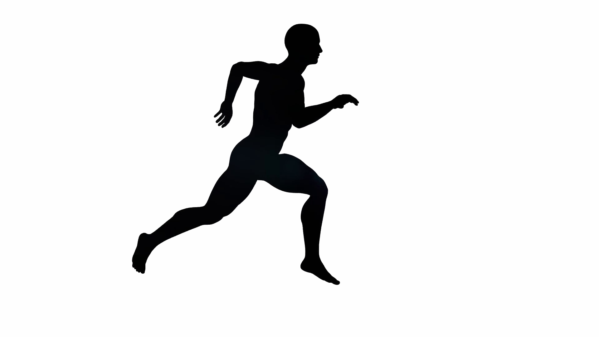

Открыть/Закрыть
❌
первый день пробежал
первый день не пробежал
Восстановительный кросс (пульс 132) час+ 6х100м ритмовые ускорения через 100м активной ходьбы.Растяжка Пресс, спина
очки: 0
cменить тему
начать заново
